Estrutura
Pilares e vigas
O esqueleto completo, da placa de base à viga de cobertura, com contraventamento e ligações registradas.
Ver elementos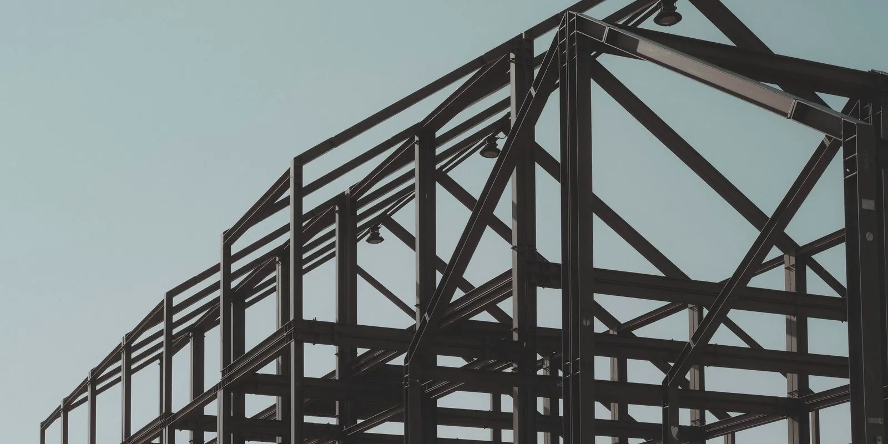
Montamos pilares, vigas, laje, escada e cobertura de sobrados e casas de dois ou três pavimentos. Estrutura leve, vãos livres maiores e obra limpa — com plano de montagem, NR-35 e ART registrada no CREA-ES.
Sobrado em estrutura metálica é a casa de dois ou mais pavimentos em que pilares e vigas são de aço em vez de concreto. A estrutura chega pronta, é parafusada na obra e recebe laje, fechamento e acabamento como qualquer casa. A Axial Engenharia monta esse esqueleto em Vitória e na Grande Vitória, com ART.
Montagem é o que fazemos todo dia: conferimos a fundação e os chumbadores, içamos pilares e vigas na sequência que mantém a estrutura estável, apertamos e soldamos as ligações previstas, deixamos prumo e nível registrados e retocamos a pintura. Projeto estrutural e material podem entrar na proposta; a fabricação das peças fica com o fabricante escolhido.
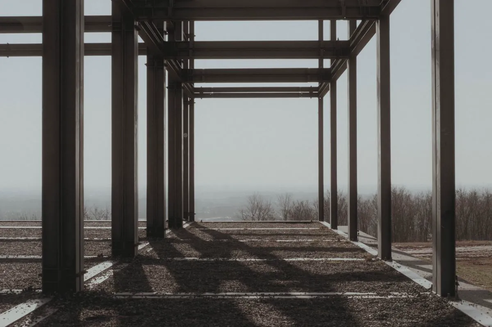
Como um sobrado metálico evolui na obra — e o tipo de arquitetura que o aço facilita.
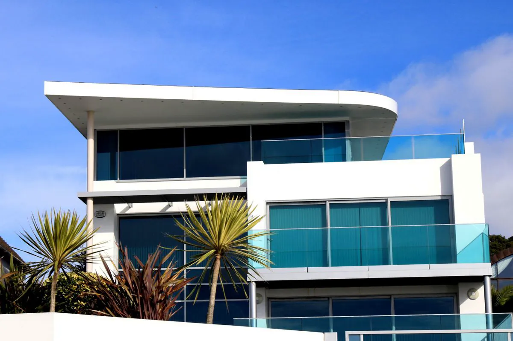
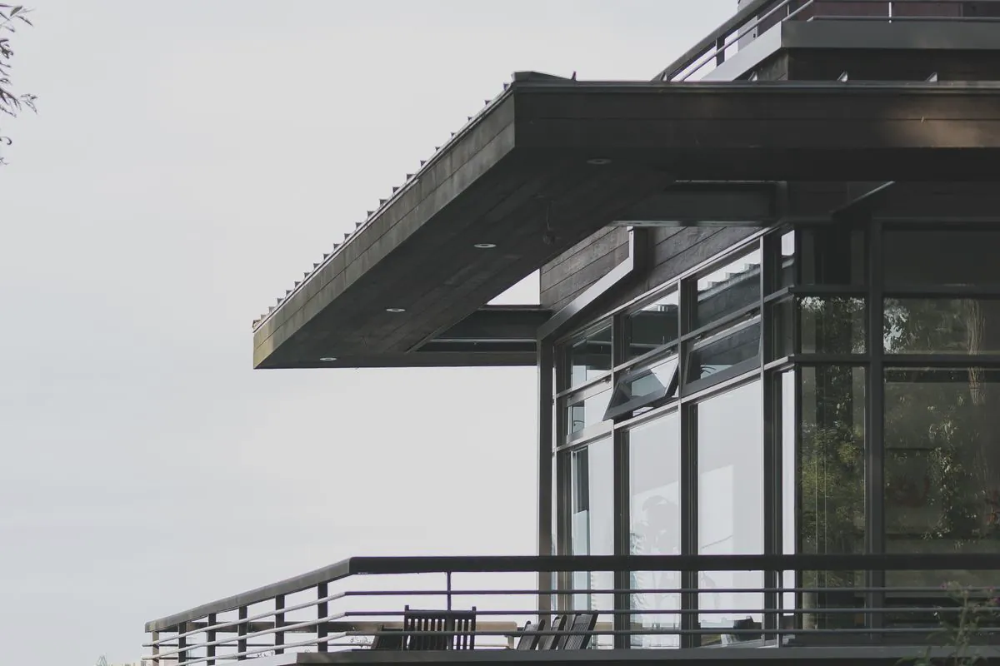
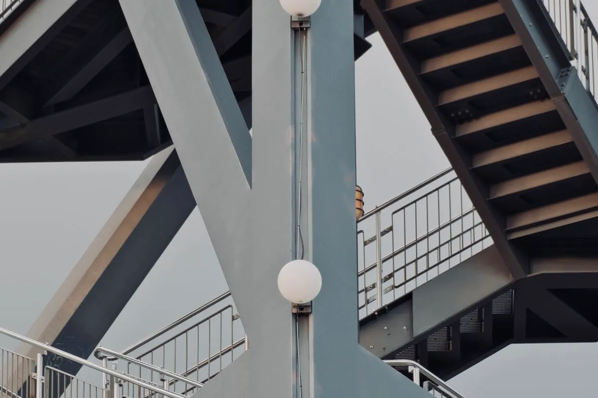
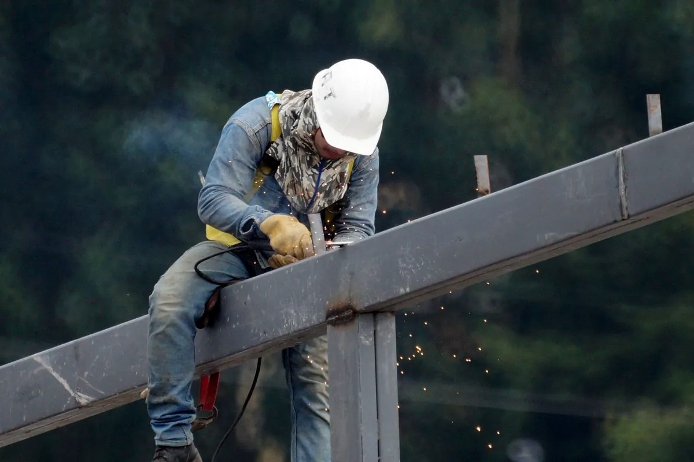
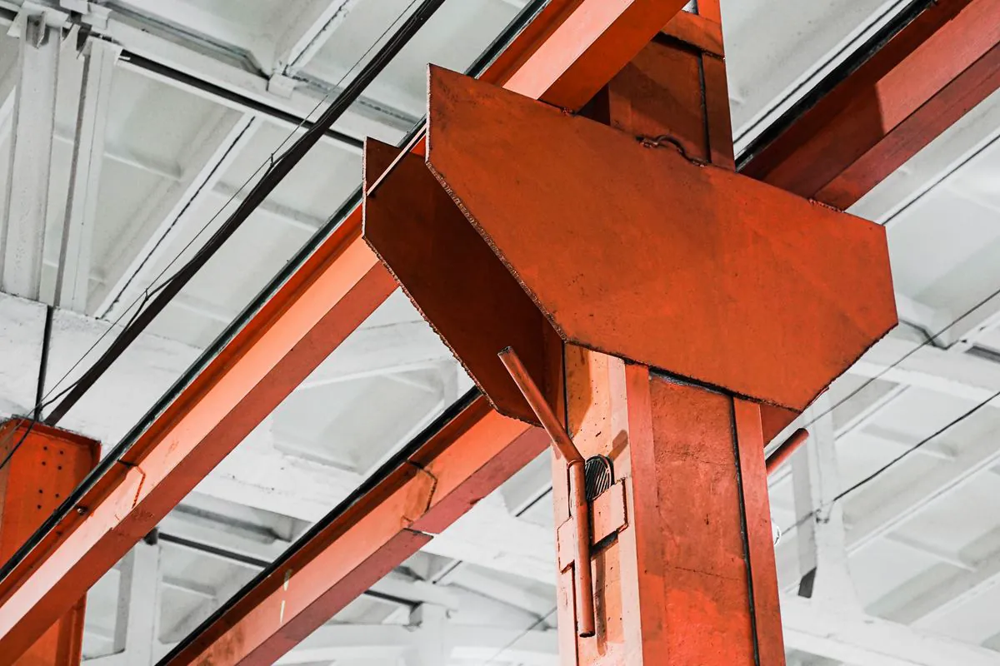
Informe a área de cada pavimento e escolha as opções. A conta mostra a ordem de grandeza — o número real sai do projeto estrutural.
Cada parte da casa em que o aço entra — e onde ela conversa com a obra civil.
O esqueleto completo, da placa de base à viga de cobertura, com contraventamento e ligações registradas.
Ver elementos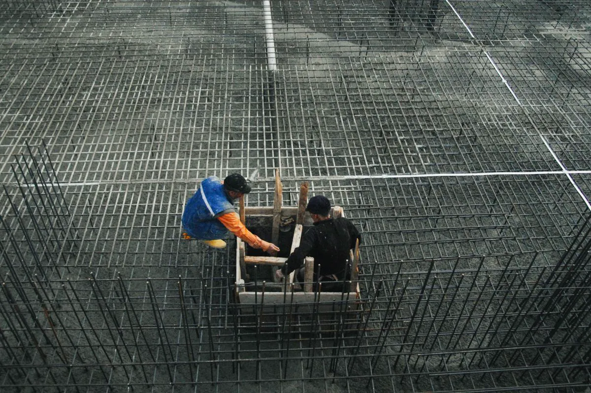
LajeVigas secundárias e fôrma de aço (steel deck) fixada, pronta para a concretagem da obra.
Ver laje metálicaEscada com banzo em perfil ou chapa dobrada, varanda em balanço e apoio de guarda-corpo.
Ver detalhes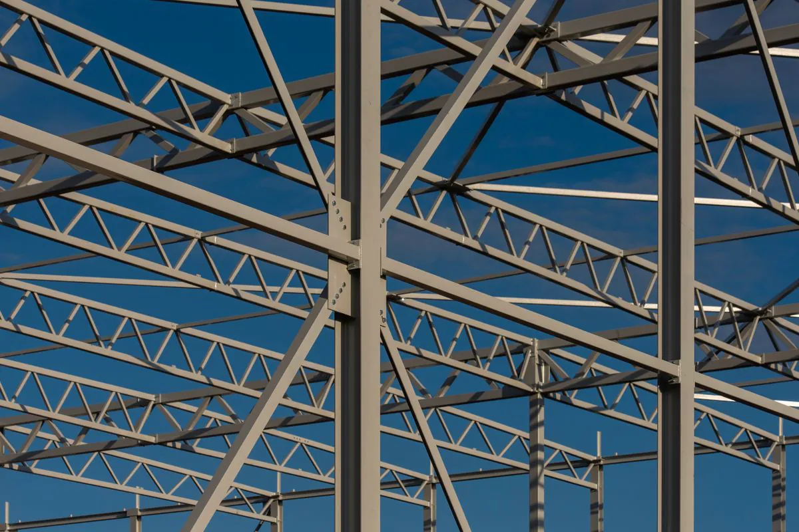
TelhadoTesouras ou vigas inclinadas, terças e correntes para telha metálica, termoacústica ou cerâmica.
Tipos de treliça Pé-direito duplo
Pé-direito duplo
Mezanino interno em sala de pé-direito duplo, apoiado na própria estrutura da casa.
Ver mezanino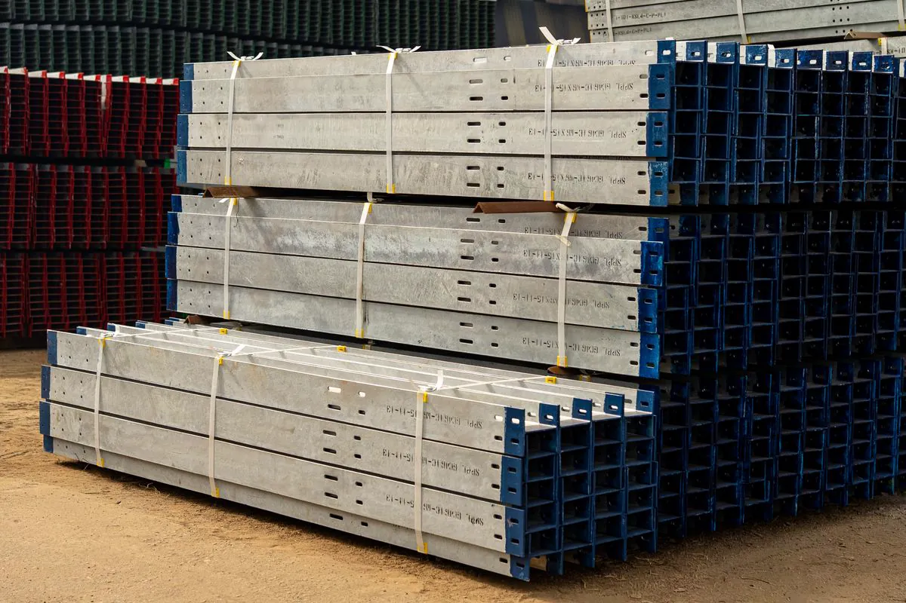
RecebimentoMarcação, medidas, furação e pintura conferidas na chegada, antes de mobilizar o guindaste.
Montagem de pré-fabricadaToque em cada parte para ver o perfil usual, o aço e o que conferimos na montagem.
Levam as cargas dos pisos e do telhado até a fundação. Em sobrado costumam ser perfil H laminado ou tubo quadrado, contínuos do térreo à cobertura quando o transporte permite.
Sustentam laje e paredes. A altura sai do vão: em vãos de 4 a 6 m, perfis W de 200 a 310 mm resolvem boa parte das casas — e ficam escondidos no forro.
Dois banzos (perfil U, tubo ou chapa dobrada) com degraus metálicos, de madeira ou de concreto. Chega em módulos e é montada depois dos pisos, sem escora.
Tesouras metálicas ou vigas inclinadas apoiadas nos pilares, com terças em perfil U enrijecido ou Z e correntes que travam as terças. A inclinação acompanha a telha escolhida.
A casa pode ser fechada em alvenaria, drywall ou placa cimentícia. Com alvenaria, a amarração ao pilar e a junta sob a viga evitam as trincas típicas do encontro entre bloco e aço.
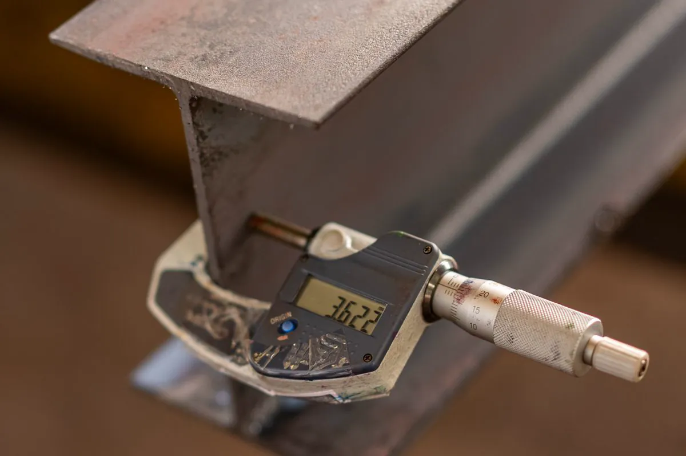
Na Grande Vitória a maresia chega longe da orla. A proteção é especificada para o ambiente — galvanização a fogo ou pintura para ambiente marinho — e, na montagem, todo risco, parafuso e solda de campo recebe retoque no mesmo sistema.
As duas funcionam. A diferença está em prazo, vão, peso e manutenção — veja o que pesa no seu caso.
| Critério | Estrutura metálica | Concreto armado |
|---|---|---|
| Etapa de estrutura | Rápida: peças prontas, montagem parafusada | Mais longa: fôrma, armação, concreto, cura e desforma |
| Vãos livres | Maiores com a mesma altura de viga | Pedem vigas mais altas ou mais pilares |
| Peso na fundação | Menor | Maior |
| Canteiro | Seco, pouco entulho, pouca escora | Muita fôrma, escora e água |
| Precisão | Milimétrica, peça feita em fábrica | Depende da execução em campo |
| Manutenção | Pede proteção contra corrosão e retoque quando danificada | Pede cobrimento correto para não corroer a armadura |
| Ampliação futura | Simples com o as-built | Exige demolição e reforço mais invasivos |
| Mão de obra | Equipe especializada em montagem | Mão de obra comum de obra |
Steel frame não é a mesma coisa. Esta página trata do esqueleto pilar–viga de aço, que aceita alvenaria. Light steel frame é outro sistema: perfis leves galvanizados a cada 40 ou 60 cm formando as próprias paredes.
Leitura do projeto, lista de peças, sequência de montagem e plano de içamento.
Locação, nível e distância conferidos antes do primeiro pilar.
Pilares, vigas e contraventamento por vão, com a estrutura sempre travada.
Fôrma de aço, escada, terças e retoque — tudo registrado no as-built.
A etapa de estrutura costuma ser bem mais rápida, porque as peças chegam prontas e são parafusadas na obra, sem esperar cura de concreto nem desforma. O prazo total da casa depende também de fundação, fechamento, instalações e acabamento.
Não. Estrutura metálica convencional é um esqueleto de pilares e vigas de aço, com vãos de alguns metros, e aceita alvenaria, drywall ou placa cimentícia no fechamento. Light steel frame é um sistema de perfis leves galvanizados a cada 40 ou 60 cm que formam as próprias paredes. Esta página trata do esqueleto pilar–viga.
Não, se a proteção for especificada para o ambiente. Na orla da Grande Vitória a maresia pede galvanização a fogo ou sistema de pintura para ambiente marinho, retoque cuidadoso de tudo o que for riscado ou soldado na montagem e peças sem pontos de acúmulo de água.
Pode. A alvenaria é amarrada aos pilares com tela ou ferro-cabelo e deve ter junta prevista no encontro com a viga, porque aço e bloco se movimentam de forma diferente. Drywall e placa cimentícia também são usados, sobretudo no pavimento superior, por serem mais leves.
Como ordem de grandeza, casas com esqueleto metálico ficam em torno de 22 a 44 kg de aço por metro quadrado construído, conforme o vão entre pilares e a laje escolhida. O número real sai do projeto estrutural; a calculadora desta página mostra a faixa.
Nosso serviço é a montagem da estrutura metálica: pilares, vigas, estrutura de laje, escada e cobertura, com ART. Projeto estrutural e fornecimento do material podem entrar na proposta. Fundação, alvenaria, instalações e acabamento ficam com a obra civil.
Mande a planta, o endereço e o prazo. Retornamos com o escopo da montagem no mesmo dia útil.
Sede em Vila Velha. Montagem residencial em Vitória, Vila Velha, Serra, Cariacica, Viana, Guarapari e Fundão, e sob consulta em Anchieta, Aracruz e Linhares.
Vigas e steel deck para laje e ampliação.
Ver laje →Piso extra em galpão, loja ou casa.
Ver mezanino →Pórticos, treliças, terças e telhas.
Ver galpão →Guia de treliças, perfis e calculadora de peso.
Ver guia →Inspeção, ensaio e projeto conduzidos sob códigos reconhecidos no Brasil e no exterior, por profissionais qualificados nos organismos de certificação da área.
 Inmetro
Instrumentos de medição com calibração rastreável à Rede Brasileira de Calibração.
Inmetro
Instrumentos de medição com calibração rastreável à Rede Brasileira de Calibração.
 ASME
Código ASME Seção VIII no cálculo e na avaliação de vasos de pressão e caldeiras.
ASME
Código ASME Seção VIII no cálculo e na avaliação de vasos de pressão e caldeiras.
 ABNT
Normas NBR aplicáveis a cada laudo técnico, ensaio e projeto estrutural.
ABNT
Normas NBR aplicáveis a cada laudo técnico, ensaio e projeto estrutural.
 Abendi
Ensaios não destrutivos executados por profissional qualificado pelo SNQC.
Abendi
Ensaios não destrutivos executados por profissional qualificado pelo SNQC.
 CMSE
Certified Machinery Safety Expert aplicado à adequação de máquinas à NR-12.
CMSE
Certified Machinery Safety Expert aplicado à adequação de máquinas à NR-12.
Logotipos exibidos como referência às normas, códigos e qualificações aplicados nos serviços.